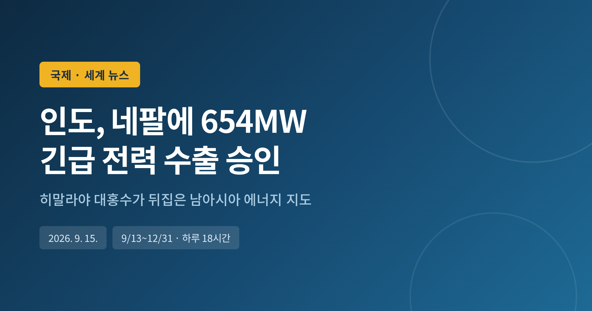
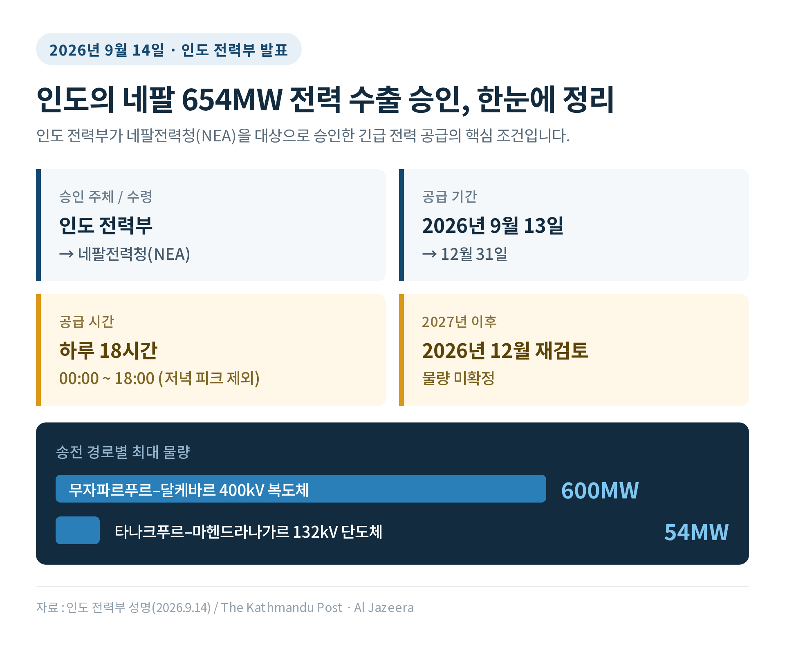
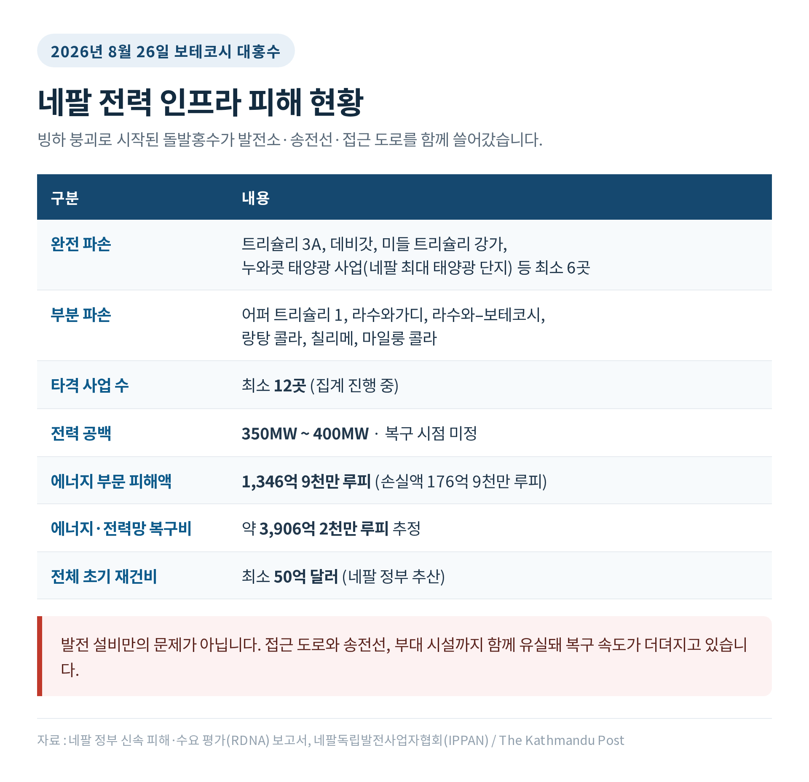
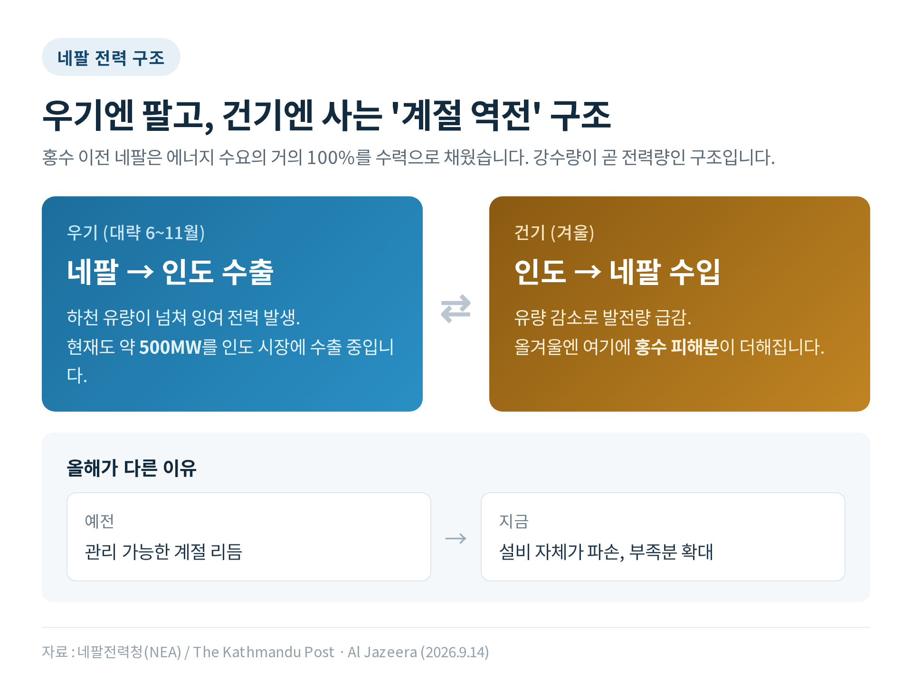
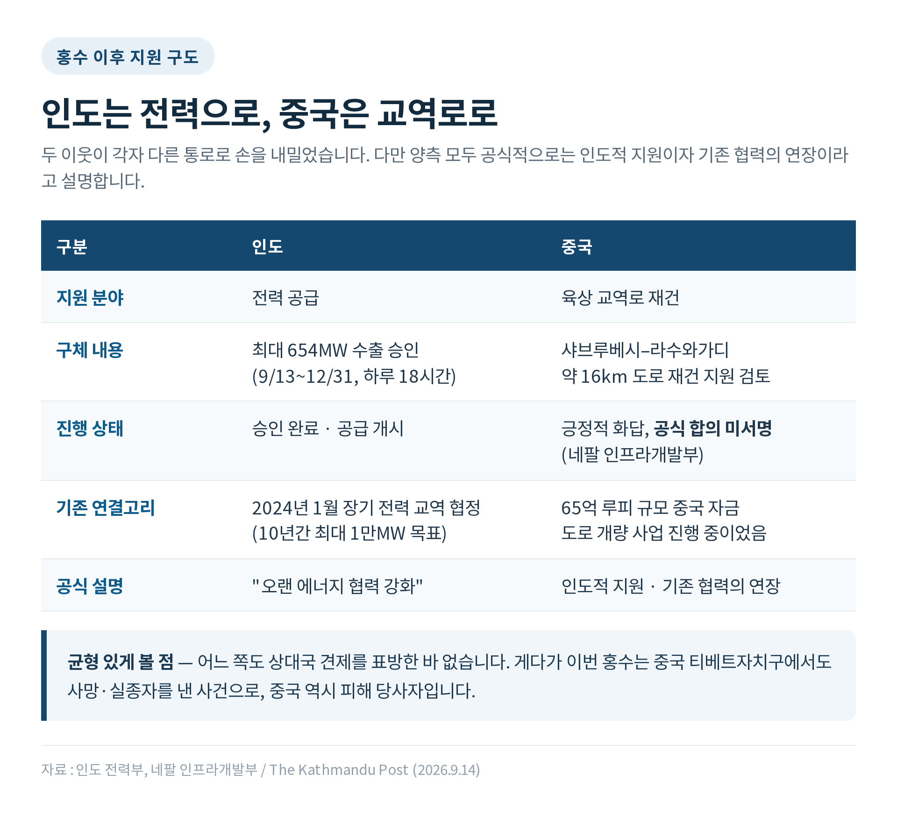
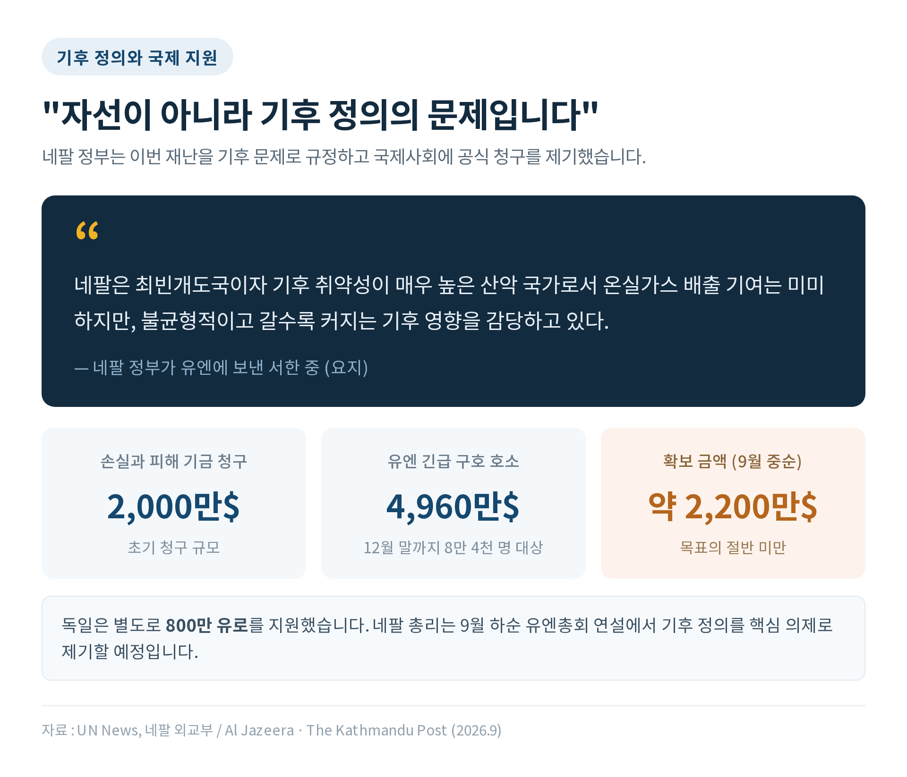

세 줄 요약
• 인도 전력부가 9월 14일 네팔에 최대 654MW 전력 수출을 승인했습니다. 9월 13일부터 12월 31일까지, 하루 18시간 공급합니다.
• 8월 26일 보테코시 대홍수로 네팔 수력발전 사업 최소 12곳이 타격을 입어 350~400MW의 전력 공백이 생긴 탓입니다.
• 전력을 팔던 나라가 사러 가는 나라로 뒤바뀌면서, 남아시아 전력 교역의 방향과 셈법이 함께 흔들리고 있습니다.
이번 글에서는 인도가 네팔에 승인한 654MW 긴급 전력 수출을 정리해 보겠습니다. 숫자 하나로 보이지만, 그 뒤에는 한 달 전 히말라야에서 벌어진 재난과 남아시아 에너지 외교의 오랜 구도가 함께 놓여 있습니다.
인도 전력부는 9월 14일 성명을 냈습니다.
네팔전력청(NEA)에 최대 654MW의 전력을 수출하도록 승인한다는 내용이었습니다. 기간은 9월 13일부터 12월 31일까지입니다.
공급 시간은 하루 24시간이 아닙니다. 자정부터 오후 6시까지, 하루 18시간입니다.
송전 경로도 나뉩니다. 무자파르푸르–달케바르 400kV 복도체 선로로 최대 600MW, 타나크푸르–마헨드라나가르 132kV 단도체 선로로 최대 54MW를 보냅니다. 두 선로를 합쳐 654MW가 나옵니다.
2027년 1월 이후의 물량은 아직 정해지지 않았습니다. 인도는 올해 12월에 다시 검토하겠다고 밝혔습니다.

인도 전력부는 이번 승인이 "네팔이 이 어려운 시기에 전력 수요를 충족하도록 돕고, 양국 간 오랜 에너지 협력을 더욱 강화할 것"이라고 설명했습니다. 네팔전력청의 디르가유 쿠마르 슈레스타 총재 직무대행은 "건기를 대비해 인도에 추가 수출을 요청했고, 인도가 승인했다"고 말했습니다.
눈여겨볼 대목은 시간대입니다. 자정부터 오후 6시까지라는 조건은, 네팔의 저녁 피크 시간대인 오후 6시 이후를 비켜 갑니다. 인도 역시 자국 수요를 관리해야 하는 처지라는 사정이 읽히는 부분입니다.
출발점은 8월 26일입니다.
네팔과 중국 국경 인근 라수와 지역에서 보테코시강이 넘쳤습니다. 히말라야 랑탕 리룽 일대의 빙하가 무너지며 산사태로 이어졌고, 막혔던 물이 한꺼번에 터져 하류를 휩쓸었습니다. 붕괴의 진동은 전 세계 지진계에 최대 Ms 5.2 규모로 기록됐습니다.
과학자들은 이를 흔히 말하는 빙하호 붕괴와는 다른 유형으로 보고 있습니다. 기후변화가 빙하 붕괴를 앞당겼을 가능성도 함께 지적됐습니다.
인명 피해는 네팔과 중국 티베트자치구를 합쳐 1,400명 이상으로 집계됐습니다. 실종자는 아직 수천 명 규모이고, 집계는 지금도 진행 중입니다. 네팔 내 실종자 가운데 발전소 근로자만 최소 900명으로 전해졌습니다.
전력 인프라 피해는 특히 컸습니다.
네팔독립발전사업자협회 집계에 따르면 트리슐리 3A, 데비갓, 미들 트리슐리 강가, 그리고 네팔 최대 태양광 단지인 누와콧 태양광 사업 등이 완전히 파손됐습니다. 어퍼 트리슐리 1, 라수와가디, 칠리메 등은 부분 파손됐습니다. 최소 12곳의 발전 사업이 타격을 입었습니다.

정부의 신속 피해·수요 평가 보고서는 에너지 부문 피해액을 1,346억 9천만 루피로 추산했습니다. 에너지와 전력망을 복구하는 데만 약 3,906억 2천만 루피가 필요하다고 봤습니다. 전체 초기 재건 비용은 최소 50억 달러로 추정됩니다.
발전소만 무너진 것이 아닙니다. 접근 도로와 송전선, 부대 시설까지 함께 쓸려 나갔습니다. 복구가 더딜 수밖에 없는 이유입니다.
현재 전력 공백은 350MW에서 400MW 사이로 파악됩니다. 언제 메워질지는 아직 말하기 어렵습니다.
네팔의 전력 구조를 알면 이 사건의 무게가 달리 보입니다.
홍수 이전 네팔은 에너지 수요의 거의 100%를 수력발전으로 채웠습니다. 화석연료 발전 비중이 사실상 없는, 보기 드문 구조였습니다. 자랑거리이자 동시에 약점이었습니다.
수력은 계절을 탑니다. 우기에는 하천 유량이 넘쳐 잉여 전력이 생기고, 건기인 겨울에는 유량이 줄어 발전량이 떨어집니다.
그래서 네팔은 해마다 방향을 바꿉니다. 여름에는 인도에 팔고, 겨울에는 인도에서 삽니다.
예전엔 이 계절 역전이 관리 가능한 리듬이었습니다. 지금은 설비 자체가 무너져 건기 부족분이 한 단계 커졌습니다.

흥미로운 장면도 있습니다. 네팔은 지금도 인도 시장에 약 500MW를 수출하고 있습니다. 우기가 아직 끝나지 않았기 때문입니다. 이번에 승인받은 654MW는 겨울에 쓸 몫입니다.
같은 국경을 사이에 두고 전기가 여름에는 북에서 남으로, 겨울에는 남에서 북으로 흐릅니다.
여기에 가격 문제가 따라붙습니다. 네팔이 우기에 파는 단가와 건기에 사 오는 단가는 같지 않습니다. 수입 단가가 더 비싸다는 지적은 네팔 안에서 오래 제기돼 온 쟁점입니다. 이번 겨울에는 그 부담이 예년보다 무거워질 가능성이 큽니다.
이번 654MW는 급조된 조치가 아닙니다. 이미 만들어져 있던 틀 위에서 방향만 뒤집은 것입니다.
네팔과 인도는 2024년 1월 4일 장기 전력 교역 협정에 서명했습니다. 향후 10년간 네팔이 인도에 최대 1만MW를 수출하는 것을 목표로 삼았습니다. 국경을 넘는 송전선도 여러 개 추가로 짓기로 했습니다.
2026년 7월 열린 제13차 네팔–인도 에너지 차관급 공동운영위원회에서는 네팔의 대인도 수출 한도를 1,650MW까지 늘리기로 합의했습니다.
2024년 10월에는 네팔·인도·방글라데시 3국 협정도 맺어졌습니다. 인도 전력망을 빌려 네팔 전기를 방글라데시로 보내는 구조입니다. 처음 40MW로 시작해 확대되는 중입니다.
같은 선로가 이번에는 반대 방향으로 쓰이게 됐습니다.

지정학적 맥락도 함께 봐야 합니다.
홍수는 네팔과 중국을 잇는 교역로도 끊었습니다. 샤브루베시에서 라수와가디 국경 통관지점에 이르는 약 16km 도로가 크게 유실됐습니다. 이 도로는 65억 루피 규모의 중국 자금 사업으로 개량 공사가 진행 중이었습니다.
네팔 정부가 재건 지원을 요청하자 중국은 긍정적으로 답했습니다. 임시 교량 설치도 거론됐습니다. 다만 공식 합의는 아직 서명되지 않았다고 네팔 인프라개발부는 밝혔습니다.
라수와가디는 2015년 대지진 이후 기존 통관지점들이 반복적으로 막히면서 네팔의 주요 대중국 교역로로 자리 잡은 곳입니다.
그래서 지금 인도는 전력 쪽에서, 중국은 육상 교역로 쪽에서 각각 손을 내민 모양새가 됐습니다.
다만 이를 곧바로 경쟁 구도로 읽는 것은 조심스럽습니다. 양측 모두 공식적으로는 인도적 지원이자 기존 협력의 연장이라고 설명하고 있습니다. 어느 쪽도 상대국 견제를 표방한 적이 없습니다. 게다가 이번 재난은 티베트자치구에서도 사망자와 실종자를 낸 사건입니다. 중국 역시 피해 당사자입니다.
한국과도 무관하지 않습니다. 트리슐리강에서 한국 기업이 주도해 짓던 216MW 규모 어퍼 트리슐리 1 사업은 공정률 84% 지점에서 큰 피해를 입었고, 한국인 근로자들이 실종돼 수색이 이어졌습니다.
네팔 정부는 이번 재난을 기후 문제로 규정했습니다.
유엔 손실과 피해 기금에 초기 2천만 달러 규모의 청구를 제기했습니다. 정부 서한은 네팔이 "최빈개도국이자 기후 취약성이 매우 높은 산악 국가로서 온실가스 배출 기여는 미미하지만, 불균형적이고 갈수록 커지는 기후 영향을 감당하고 있다"고 적었습니다.
시시르 카날 외교장관은 국제사회의 지원을 자선이 아니라 기후 정의의 관점에서 봐 달라고 요청했습니다.
유엔과 인도적 지원 파트너들은 12월 말까지 8만 4천 명을 지원하기 위해 4,960만 달러 규모의 긴급 구호를 호소했습니다. 9월 중순 기준 확보된 금액은 약 2,200만 달러입니다. 목표의 절반에 미치지 못합니다. 독일은 별도로 800만 유로를 지원했습니다.

네팔 총리는 9월 하순 유엔총회 연설에 나설 예정이며, 기후 정의 호소가 핵심이 될 것으로 전망됩니다.
이 요구가 어떻게 받아들여질지는 아직 알 수 없습니다. 손실과 피해 기금은 재원 규모와 배분 기준을 둘러싼 논의가 여전히 진행 중이기 때문입니다. 네팔의 청구가 선례가 될지, 상징적 요구에 그칠지도 지켜봐야 합니다.
가까운 시점의 분기점은 올해 12월입니다.
인도가 2027년 1월 이후 물량을 어떻게 정하느냐가 네팔의 겨울 이후를 좌우합니다. 손상된 발전소들의 복구 속도가 그 판단의 근거가 될 것입니다.
두 번째는 복구의 방향입니다. 네팔 정부는 무너진 도로를 원래 자리가 아닌 더 안전한 곳에 다시 놓는 방안을 검토하고 있습니다. 발전 설비에도 같은 질문이 따라붙습니다. 같은 자리에 같은 방식으로 다시 지을 것인지, 아니면 위험을 다시 계산할 것인지의 문제입니다.
세 번째는 에너지 구성입니다. 수력 100%에 가까운 구조는 효율적이지만 한 번의 재난에 통째로 흔들립니다. 네팔 최대 태양광 단지마저 같은 홍수에 무너졌다는 점은 분산이 곧 안전을 보장하지 않는다는 사실도 함께 보여줍니다.
네 번째는 히말라야 자체입니다. 이 지역 빙하가 10년 전보다 빠르게 녹고 있으며, 금세기 중반경 이른바 '피크 워터'에 도달할 수 있다는 연구가 이달 발표됐습니다. 수력발전의 전제가 되는 물의 리듬이 바뀌고 있다는 뜻입니다.
한계도 짚어야 하겠습니다. 654MW는 어디까지나 12월 31일까지의 임시 조치입니다. 무너진 발전소를 되살리는 일도, 기후 재원을 마련하는 일도 이 승인으로 해결되지 않습니다.
정리하면 이렇습니다.
이번 조치는 한 나라의 전력난을 이웃 나라가 메워 준 사건이자, 남아시아 전력망이 이미 한 몸처럼 연결돼 있다는 사실을 드러낸 사건입니다. 평소에는 잉여를 사고파는 통로였던 선로가, 위기에는 생명선이 됐습니다.
"전력망을 잇는 일은 거래를 만드는 동시에 안전망을 만드는 일이었습니다."
히말라야의 물이 예전 같지 않다면, 그 물에 기대어 세운 계획도 다시 셈해야 할 것입니다. 네팔의 이번 겨울은 그 계산을 시작하라는 청구서일지도 모르겠습니다.